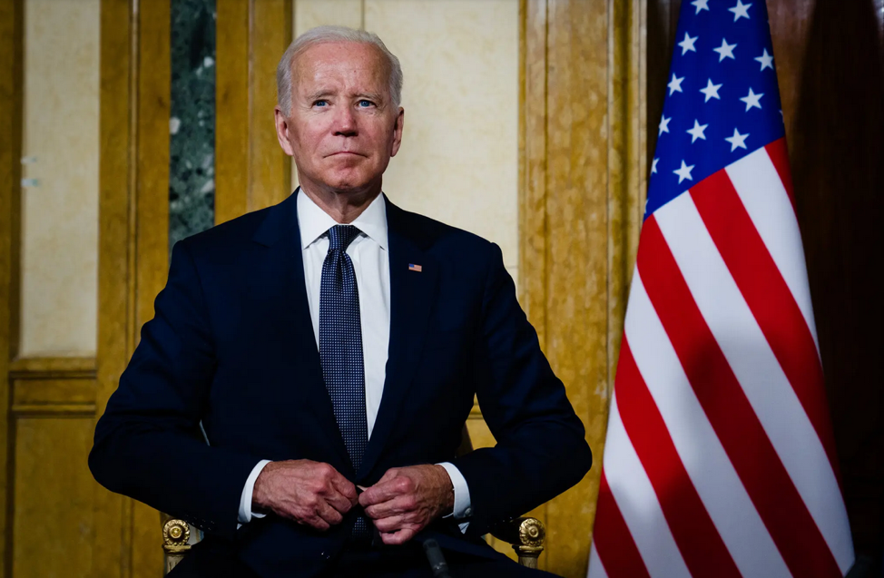

November 1, 2021
At Climate Talks, Biden Will Try to Sell American Leadership to Skeptics
 GLASGOW — President Biden will walk into a riverside event space on Monday to try to convince a gathering of world leaders that the United States, which has pumped more greenhouse gases into the atmosphere than any other nation, is finally serious about addressing climate change and that others should follow its lead.Mr. Biden is coming with a weaker hand than he had hoped.
Read story here, https://www.nytimes.com/2021/10/31/climate/climate-change-biden-cop26.html